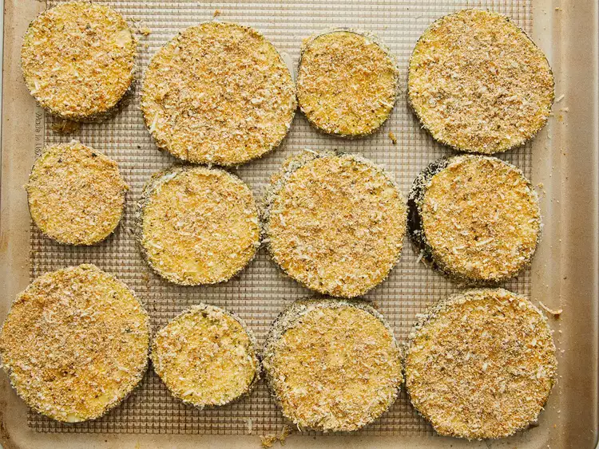
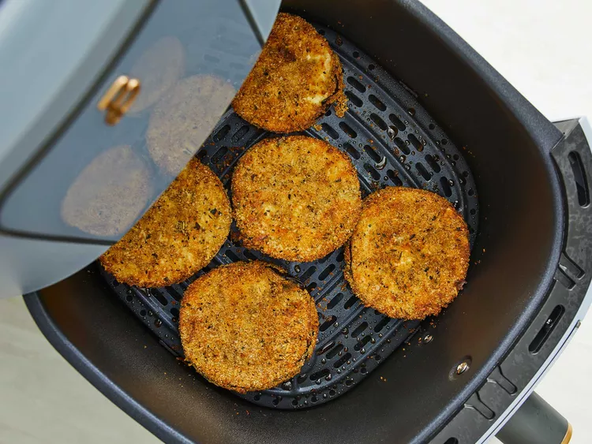
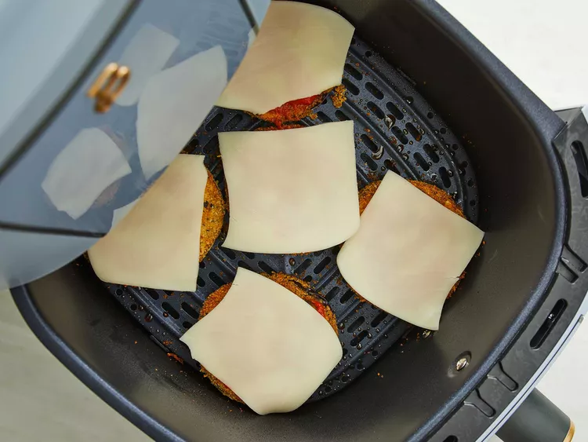

Air Fryer Eggplant Pamesan
These are fryer eggplant parmesan rounds are oil-free, yet they are crispy and crunchy.
All thanks to an air fryer! They are good eaten right out of the air fryer or topped with marinara sause and mozzerella cheese.
Eitherway, they are delicious.
Preparation Time
Ingredients
- 1/2 cup Italian bread crumbs
- 1/4 cup freshly grated Parmesan cheese
- 1 teaspoon Italian seasoning
- 1 teaspoon salt
- 1/2 teaspoon dried basil
- 1/2 teaspoon garlic powder
- 1/2 teaspoon onion powder
- 1/2 teaspoon freshly ground black pepper
- 1/4 cup flour
- 2 large eggs, beaten
- 1 medium eggplant, sliced into 1/2-inch rounds
- 1 cup marinara sauce, or more to taste
- 8 slices mozzerella cheese, or as needed
Directions
Step 1
Combine bread crumbs, Parmesan cheese, Italian seasoning, salt, basil, garlic powder, onion powder
and black pepper in a shadow bowl. Place flour in a seperate shallow and beaten eggs in a third shadow bowl.

Step 2
Dip sliced eggplant first in the flour, then in beaten eggs, and finally coat with bread crumb mixture.
Place coated eggplant on a tray and let rest for 5 minutes.

Step 3
Preheat an air fryer to 370 degrees F (185 degrees C)
Step 4
Place breaded eggplant rounds in the air fryer basket, making sure they are not touching;
work in batches if necessary. Cook for 8 to 10 minutes, flip each round, and cook until desired crispness is achieved,
4 to 6 minutes more.

Step 5
Top each eggplant round with marinara sauce and 1 slice of mozzerella cheese.
Place the basket back in the air fryer and cook until cheese has started to melt, 1 to 2 minutes. Repeat
with remaining eggplant, if necessary.

Step 6
Serve hot and enjoy
.webp)
Nutrition Facts